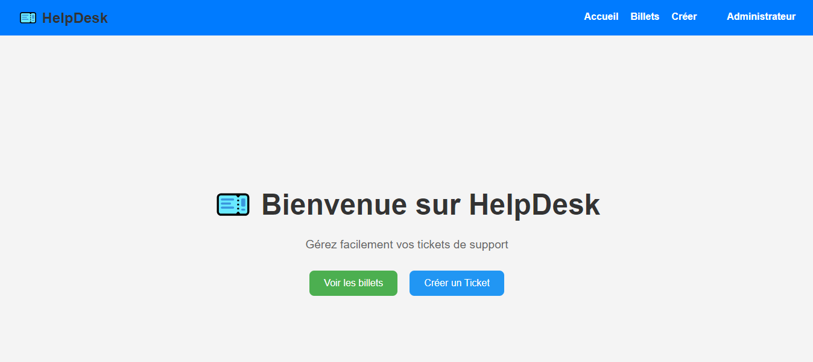

Épreuve E6 - Parcours de Professionnalisation
L'épreuve E6 du BTS SIO option SLAM est une épreuve orale qui permet d’évaluer le parcours professionnel de l’étudiant à travers ses expériences en entreprise, les missions réalisées et les compétences mobilisées en situation réelle.
Déroulement de l'épreuve
Cette épreuve est une soutenance orale de 30 minutes :
- Présentation (20 minutes) : l'étudiant présente deux situations professionnelles significatives rencontrées lors de stages ou en alternance.
- Entretien (10 minutes) : échange avec le jury sur les missions, les compétences et la démarche professionnelle.
Contenu du dossier présenté
- Deux fiches de situation professionnelle
- Un tableau de synthèse des compétences mobilisées
- Des documents justificatifs : maquettes, extraits de code, captures d'écran, fiches de réalisation
Situations professionnelles

Fiche 1 - Application de gestion de tickets
Développement d’une application web d’assistance (HelpDesk).
Fiche réalisation 1 Fiche procédure HelpDeskFiche 2 - Site web informatif sur le handball
Création d’un site vitrine pour promouvoir le handball et informer les visiteurs.
Fiche réalisation 2 Fiche procédure Handball handball WorldCompétences mobilisées
- Analyser les besoins et formaliser une solution
- Développer la présence en ligne de l'organisation
- Mettre à disposition des utilisateurs un service informatique
- Travailler en mode projet et en équipe
- Rédiger une documentation technique
- Organiser son développement professionnel
Conclusion
L’épreuve E6 met en lumière le parcours professionnel de l’étudiant et sa capacité à appliquer les enseignements reçus en BTS SIO dans un cadre professionnel réel. C’est une épreuve déterminante pour valoriser les compétences techniques et comportementales en situation concrète.